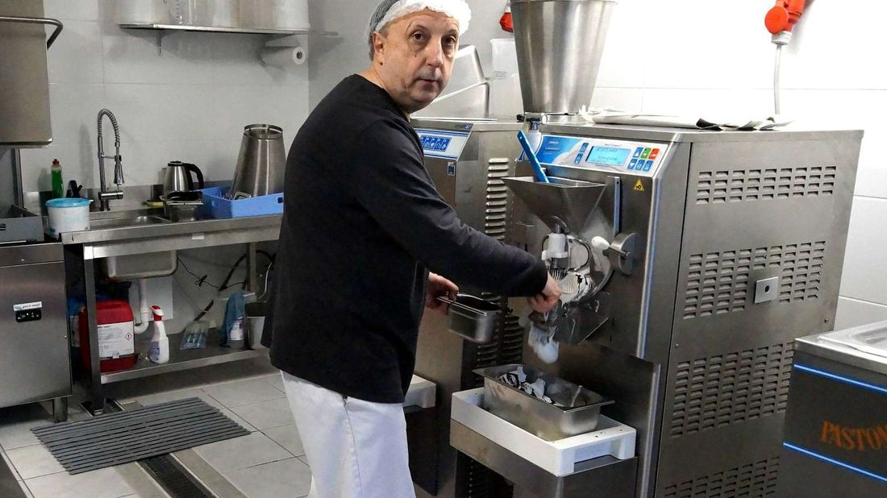
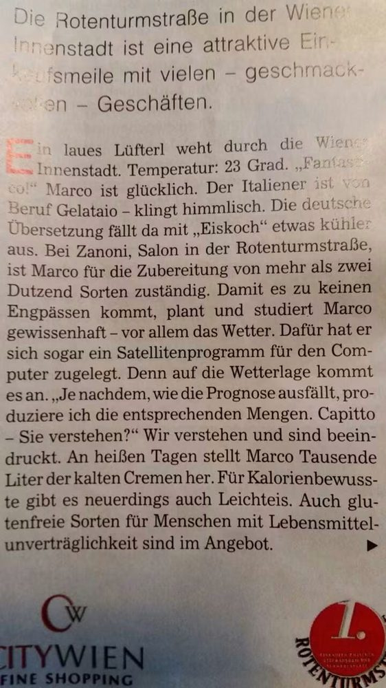

👤 Über mich
Meine Geschichte
Jahrelang habe ich in der Speiseeisproduktion gearbeitet, zwischen Österreich und Deutschland, und habe dabei in der Praxis Basen, Pasten und Halbfertigprodukte der wichtigsten Hersteller der Branche genau kennengelernt.
Eine Krankheit, die zu einer Beinlähmung geführt hat, hat mich von der täglichen Arbeit im Labor entfernt, aber nicht von der Erfahrung, die ich in all diesen Jahren gesammelt habe. Ich habe beschlossen, diese Erfahrung denen zur Verfügung zu stellen, die noch jeden Tag hinter der Theke stehen, und dafür ein kostenloses, unabhängiges Werkzeug zum Vergleichen von Zutaten und für bewusstere Entscheidungen zu schaffen — etwas, das ich mir selbst gewünscht hätte, als ich noch in der Produktion war.



Ein Besuch im Labor
Über die Jahre habe ich auch Kindergruppen im Labor empfangen, um ihnen aus der Nähe zu zeigen, wie Speiseeis entsteht. Auf den Fotos wurden die Gesichter der Kinder zum Schutz ihrer Privatsphäre unkenntlich gemacht.


Warum dieses Portal
Der Eisdielen Zutatenvergleich entstand, um Eismachern, Konditoren und Betreibern handwerklicher Eisdielen zu helfen, Basen, Pasten, Halbfertigprodukte und technische Zutaten der wichtigsten Hersteller der Branche schnell und objektiv zu vergleichen — mit technischen Daten (PAC-Wert, POD-Wert, Trockenmasse), klar aufbereitet für den täglichen Gebrauch im Labor.
- Unabhängigkeit: kein Unternehmen zahlt dafür, aufgenommen oder besser dargestellt zu werden als ein anderes.
- Kostenlos: Produktvergleich, Archiv und Rechner bleiben immer kostenlos und ohne Registrierung.
- Praxiserfahrung: jedes Datenblatt entsteht aus der Sicht von jemandem, der wirklich in der Produktion gearbeitet hat, nicht aus einem Verkaufskatalog.
📰 Presseschau
Einige Artikel, die über die Jahre von meiner Arbeit als Eismacher zwischen Wien und Deutschland berichtet haben.


Kontakt
Für Hinweise, Korrekturen an den Daten oder Vorschläge für neue Produkte im Archiv, schreib mir an marcolestan@gelateriaingredienti.com.